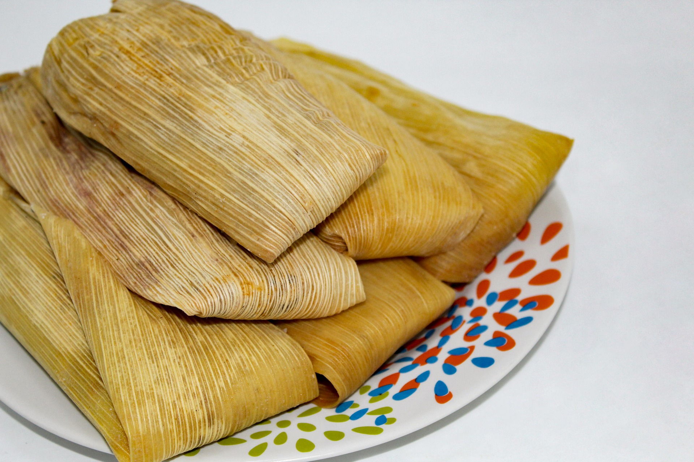

Los pinchos
Los pinchos, también conocidos como pintxos en euskera, son pequeñas porciones de comida que se sirven sobre una rebanada de pan y sujetas con un palillo. Su origen se sitúa en el País Vasco, donde se servían como aperitivos en tabernas y bares. La palabra "pincho" proviene del verbo español "pinchar", que hace referencia al palillo que se usa para sujetar los ingredientes. Aunque los pinchos tienen un origen en el País Vasco, su popularidad se ha extendido por todo el país y se han convertido en una parte querida de la cultura gastronómica española.